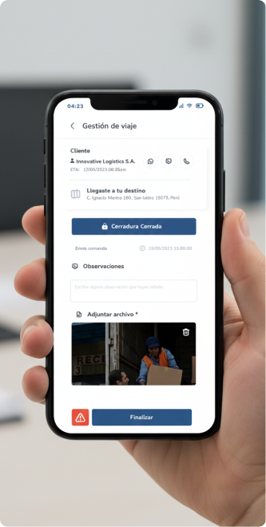

Satelock: El Proceso
Detrás de la Innovación
Un desglose táctico de cómo transformamos la seguridad de flotas
mediante UX estratégica, IA y React.
El Desafío: Brecha de Usabilidad
Los sistemas legados presentaban una carga cognitiva abrumadora para los operadores. La falta de respuesta en tiempo real y una arquitectura de información fragmentada provocaban retrasos críticos en la detección de incidentes.
- Tiempos de respuesta superiores a 15 minutos.
- Interfaz no adaptativa (Desktop-only).
Una plataforma centralizada basada en Atomic Design que optimiza la toma de decisiones mediante visualización predictiva y una jerarquía visual clara diseñada para entornos de alta presión.
- Monitoreo en tiempo real con latencia < 1s.
- Ecosistema responsivo y notificaciones inteligentes.
UX Research Deep Dive
Identificando los puntos de fricción en la monitorización de activos críticos en tiempo real.
User
Personas
Enfoque en seguridad individual y alertas rápidas.
Gestión masiva, analítica avanzada y optimización 24/7.
Journey Mapping Analysis
Alerta en
tiempo real
Fricción Crítica:
Latencia
Protocolo de
bloqueo
Reporte de
incidente
IA & Creative Workflow
Integrando herramientas de inteligencia artificial para acelerar la producción de alta fidelidad sin comprometer la calidad.
Midjourney Integration
Generación de mapa de Empatía donde el usuario pasa un recorrido de emociones por todo el servicio que tiene que hacer para llegar al objetivo final, medimos los resultados y armamos un esquema.

STICH (IA) Integration
Uso de Stitch para la generación de texturas dinámicas, recursos visuales abstractos y apoyo en la creación de interfaces, facilitando la exploración rápida de estilos visuales y conceptos de diseño para el dashboard.
Design System: Atomic Strategy
Implementamos una arquitectura de diseño atómica para asegurar la escalabilidad. La decisión de un Dark Theme fue fundamental: reducir la fatiga ocular de los operadores que supervisan pantallas durante turnos de 8 a 12 horas.
Definición de estilos base, inputs y componentes funcionales interdependientes para una interfaz cohesiva.
Estructuras complejas como dashboards de control y paneles de monitorización multiactivo.
Simulación de flujos de usuario complejos y micro-interacciones de alta fidelidad para validar la ergonomía digital antes de la implementación final.
Usability Testing & User Validation Report with Hotjar
Validación rigurosa mediante metodologías cualitativas y cuantitativas para asegurar la viabilidad del diseño.

Usuarios Evaluados
Pruebas moderadas y no moderadas para validar la intuitividad de la interfaz.
Shadowing Sessions
Observación directa de operadores en su entorno de trabajo real para detectar fricciones invisibles.
Success Rate
Tasa de éxito en la realización de tareas críticas durante el primer uso del dashboard renovado.
Development & Scalability
React Architecture
Uso de Custom Hooks para la gestión de WebSockets y estados globales complejos con Redux Toolkit.
Performance First
Implementación de Memoization y Virtualización de listas para manejar +5000 activos simultáneos.
Validation & KPIs
"Los heatmaps confirmaron que la nueva jerarquía visual redujo el tiempo de reacción ante alertas en un 25%."
VISUAL SHOWCASE
Galería de Producto | Alta Fidelidad
Visualización final del ecosistema digital optimizado para conversión y
experiencia de usuario.

